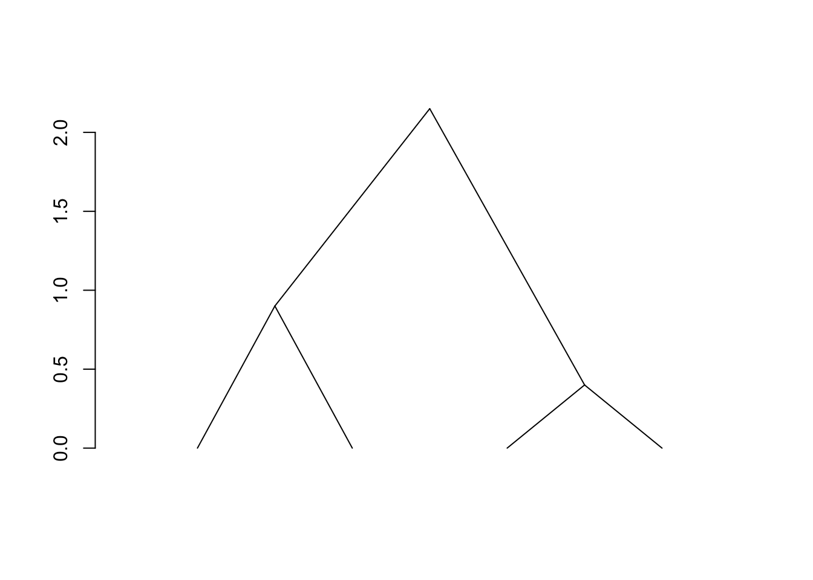

adjclust is a package that provides methods to perform adjacency-constrained hierarchical agglomerative clustering. Adjacency-constrained hierarchical agglomerative clustering is hierarchical agglomerative clustering (HAC) in which each observation is associated to a position, and the clustering is constrained so as only adjacent clusters are merged. It is a common method used widely in various application fields including ecology (Quaternary data) and bioinformatics (e.g. Genome Wide Association Studies or Hi-C data analysis).
adjclust provides three user level functions: adjClust, snpClust and hicClust, which are briefly explained below.
Installation
You can install adjclust from github with:
# install.packages("devtools")
devtools::install_github("pneuvial/adjclust")
adjClust
adjClust performs adjacency-constrained HAC for standard and sparse, similarity and dissimilarity matrices and dist objects. Matrix::dgCMatrix and Matrix::dsCMatrix are the supported sparse matrix classes. Let’s look at a basic example
library("adjclust")
sim <- matrix(c(1.0, 0.5, 0.2, 0.1,
0.5, 1.0, 0.1, 0.2,
0.2, 0.1, 1.0, 0.6,
0.1, 0.2 ,0.6 ,1.0), nrow=4)
h <- 3
fit <- adjClust(sim, "similarity", h)
plot(fit)
The result is of class chac. It can be plotted as a dendogram (as shown above). Successive merge and heights of clustering can be obtained by fit$merge and fit$height respectively.
snpClust
snpClust performs adjacency-constrained HAC for specific application of Genome Wide Association Studies (GWAS). A minimal example is given below. See GWAS Vignette for details.
library("snpStats")
#> Loading required package: survival
#> Loading required package: Matrix
data("ld.example", package = "snpStats")
geno <- ceph.1mb[, -316] ## drop one SNP leading to one missing LD value
h <- 100
ld.ceph <- ld(geno, stats = "R.squared", depth = h)
image(ld.ceph, lwd = 0)
fit <- snpClust(geno, stats = "R.squared", h = h)
plot(fit)
hicClust
hicClust performs adjacency-constrained HAC for specific application of Hi-C data analysis. A minimal example is given below. See Hi-C Vignette for details.
library("HiTC")data("hic_imr90_40_XX", package = "adjclust")
binned <- binningC(hic_imr90_40_XX, binsize = 5e5)
#> Bin size 'xgi' =501579 [1x501579]
#> Bin size 'ygi' =501579 [1x501579]
mapC(binned)
#> minrange= 12 - maxrange= 1022
fitB <- hicClust(binned)
plot(fitB)
Credits
Version 0.4.0 of this package was completed by Shubham Chaturvedi as a part of the Google Summer of Code 2017 program.